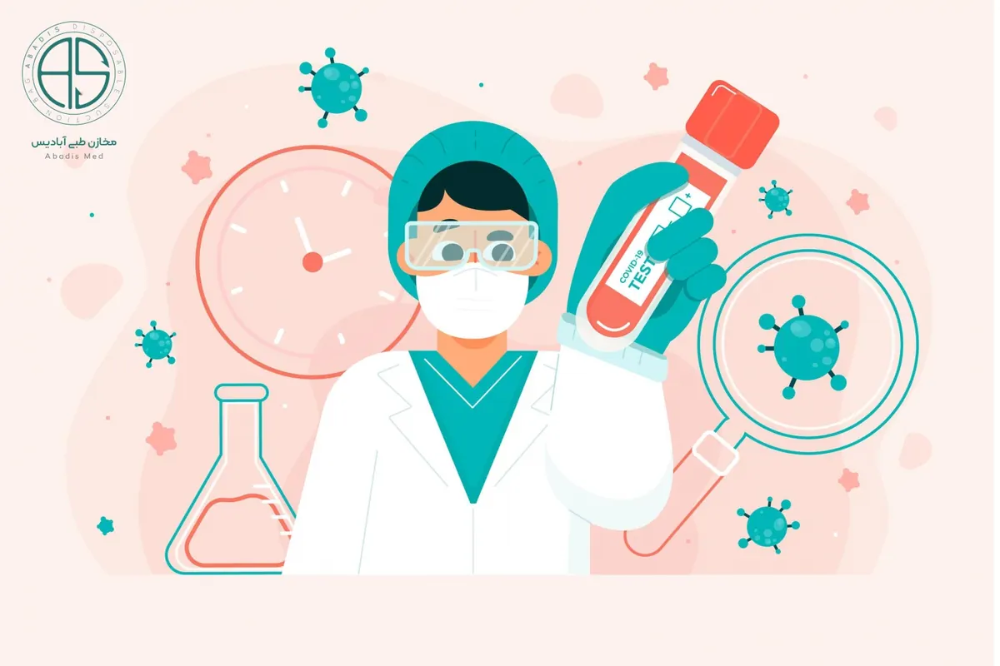

بررسی میزان بروز عفونت بیمارستانی
از آنجایی که بیمارستانها مهمترین مرکز در ارائه خدمات بهداشتی، درمانی محسوب میشوند به دلیل داشتن شرایط خاص از نظر پذیرش افراد با بیماریهای مختلف ،وجود افراد مختلف ارائه دهنده خدمات، رفت و آمد ملاقات کنندگان و همراهان بیمار به عنوان مرکز انتقال عفونت به شمار رود. پیشرفتهای تکنولوژیکی، کاهش مقاومت انسانها، پیدایش داروهای جدید و در نتیجه کاهش مقاومت دفاعی بدن باعث شده که به تنوع و تعداد عفونتهای بیمارستانی اضافه شود. این تحقیق با توجه به اهمیت بالینی این مشکل که در بالا توضیح داده شد و عدم وجود آمار دقیق عفونت بیمارستانی در سطح کشور به ویژه در استان قم، در بیماران بستری در یکی از بیمارستانهای بزرگ قم در سال ۱۳۸۶ که به دلایل خاص از ذکر نام آن معذوریم انجام شده. نتایج این مطالعه ضمن مقایسه با آمارهای بین المللی و کشف اشکالات موجود در سیستم خدمات رسانی، ما را به تبیین مقررات خاص جهت کاهش میزان مرگ و میر بیماران بستری شده مبتلا به عفونت بیمارستانی، ملزم مینماید.
مواد و روشها
این تحقیق یک مطالعه بروز ( Incidennce study ) بوده و داده ها به صورت آینده نگر جمع شده است. جمعیت مورد بررسی ،بیماران بستری در بخشهای CCU و ICU
جراحی مردان و زنان،نفرولوژی،نوزادان وعفونی یکی از بیمارستانهای شهر مقدس قم در طول سال ۱۳۸۶ – ۱۳۸۷ به تعداد ۲۹۳۱ بودند. در ابتدای مطالعه پرسشنامههایی تهیه و تنظیم گردید و کلیه نکات مربوط به تشخیص عفونتهای بیمارستانی به پرستاران شاغل در بخشها به ویژه سر پرستاران آموزش داده شد و سپس با نظارت مستقیم پزشک و پرستار کنترل عفونت و همکاران این تحقیق، بیماران دارای شرایط و علائم بالینی عمومی شامل: تب، ضعف، بیحالی، راشهای پوستی و درد عضلانی و علائم اختصاصی شامل عفونت ادراری، ریوی و عفونتهای پوستی که بعد از ۴۸ ساعت که در بیمارستان بستری شدند این علائم ظاهر شده بود، ایزوله شده و تحت بررسی قرار گرفتند.
در شرایط استریل از این بیماران و اجزاء اتصالی به آنها (مثل انژیو،کاتتر، سوند و غیره) نمونههای اختصاصی از زخم، خلط، خون و ادرار تهیه شده و به آزمایشگاه منتقل گردید و از هر نمونه چند اسمیر تهیه و رنگ آمیزی گرم و گیمسا همزمان انجام شد. برای کشت ادرار از دو محیط اگار خوندار، مکانکی، EMB استفاده شده و در خصوص کشت خون از دو محیط کشت مایع TSB کاستاندا و روش لیزسانتریفیوژ استفاده شد. در کشت خلط از محیط اگار خونی و مکانکی و در کشت زخمها اگار خوندار و شکلات اگار استفاده شد. برای ردیابی قارچها در نمونهها از محیط سابور و دکستروز اگار همراه با کلرامفنیکل و مالت دکستروز اگار همراه با کلرامفنیکل استفاده شد. پس از ۲۴ ساعت انکوباسیون، جهت شناسایی باکتریها در حد گونه از تستهای افتراقی، کاتالاز، اکسیداز، کواگولاز، ایندول، SIM ،TSI ،MRVP، سیترات و اورهاز استفاده شد. پس از بررسی نمونه مستقیم و گسترش چنانچه قارچ دیده شد، آن را در محیط سابورو دکستروز اگار همراه با کلرامفنیکل و مالت دکستروز اگار همراه با کلرامفنیکل کشت داده و بعد از ۲۴ ساعت برای مخمر و یک هفته برای ساپروفیتها انکوباسیون انجام شد.
سپس نمونههای مخمر با تست بیوشیمیایی و محیط کشت کروم اگار تایید می شد. نمونه ساپروفیت هم با مشاهده نمونه مستقیم از کشت و تهیه اسلاید کالچر تایید می شد. سپس اطلاعات بدست آمده به همراه اطلاعات در هر بخش به تفکیک از نرم افزار اطلاعات بیمارستانی (HIS (Health Information Service از قبیل نام و نام خانوادگی، سن، جنس، تاریخ بستری، بخش بستری، بیماری علت بستری شدن، بروز عفونت بیمارستانی، محل بروز عفونت بیمارستانی، تاریخ بروز عفونت بیمارستانی و نوع نمونه آزمایشگاهی، در پرسشنامه ثبت گردید. برای محاسبه تعداد بیمار – روز بستری، مدت اقامت بیماران در تعداد بیماران هر بخش ضرب شد. برای تعیین چگالی بروز، تعداد ( Incidence Density) تعداد موارد عفونت بیمارستانی تشخیص داده شده در سال ۱۳۸۶ را بر مجموع بیمار – روز بستری در همان سال تقسیم و بر حسب ده هزار بیمار – روز بیان شد. میزان بروز عفونت بیمارستانی به صورت تعداد موارد عفونت بیمارستانی تقسیم بر کل بیماران بستری شده در طول سال ۱۳۸۶ با نرم افزار spss محاسبه گردید.
نتایج
درطول سال ۱۳۸۶-۱۳۸۷ در بین بیماران بستری در بخشهای مختلف بیمارستان،تعداد ۱۰۵ بیمار مبتلا به عفونت بیمارستانی بر اساس پارامترهای مراقبتی عفونت بیمارستانی شناخته شد که ۵۰ نفر( ۴۷.۶۱ ) زن و ۵۵ نفر مرد( ۵۲.۳۸ )بودند. میانگین سنی ۲۶.۴± ۶۴.۱۶ سال با دامنه سنی چند ماه تا بیماران ۱۲۱ سال بود که ۱۰.۱۶٪ (۱۲ بیمار) کمتر از ۳۰ سال، ۲۳.۷۲٪ (۲۸ بیمار) بین ۳۰ تا ۵۹ سال و ۶۷.۷۹٪ (۸۰ بیمار) سن بالاتر از ۶۰ سال داشتند. میزان بروز عفونت بیمارستانی در سال ۱۳۸۶ در این مطالعه ۳۵ در ده هزار بیمار به دست آمد. با توجه به طول مدت تحقیق، بروز یک ساله موارد عفونت بیمارستانی برابر ۰.۳۵٪ می باشد. در جدول ۱ که رد مقاله بعدی برای شما قرار داده ایم، توزیع فراوانی بیماران، میزان بیمار – روز بستری، میزان بروز ومیزان چگالی بروز به تفکیک بخش های درمانی بیمارستان نشان داده شده است.